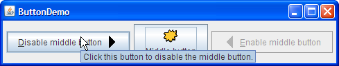

Creating a tool tip for anyJComponentobject is easy. Use thesetToolTipTextmethod to set up a tool tip for the component. For example, to add tool tips to three buttons, you add only three lines of code:When the user of the program pauses with the cursor over any of the program's buttons, the tool tip for the button comes up. You can see this by running theb1.setToolTipText("Click this button to disable the middle button."); b2.setToolTipText("This middle button does not react when you click it."); b3.setToolTipText("Click this button to enable the middle button.");ButtonDemoexample, which is explained in How to Use Buttons, Check Boxes, and Radio Buttons. Here is a picture of the tool tip that appears when the cursor pauses over the left button in theButtonDemoexample. For components such as tabbed panes that have multiple parts, it often makes sense to vary the tool tip text to reflect the part of the component under the cursor. For example, a tabbed pane might use this feature to explain what will happen when you click the tab under the cursor. When you implement a tabbed pane, you can specify the tab-specific tool tip text in an argument passed to the
addTaborsetToolTipTextAtmethod.Even in components that have no API for setting part-specific tool tip text, you can generally do the job yourself. If the component supports renderers, then you can set the tool tip text on a custom renderer. The table and tree sections provide examples of tool tip text determined by a custom renderer. An alternative that works for all
JComponents is creating a subclass of the component and overriding itsgetToolTipText(MouseEvent)method.
Most of the API you need in order to set up tool tips belongs to theJComponentclass, and thus is inherited by most Swing components. More tool tip API can be found in individual classes such asJTabbedPane. In general, those APIs are sufficient for specifying and displaying tool tips; you usually do not need to deal directly with the implementing classesJToolTipandToolTipManager.The following table lists the tool tip API in the
JComponentclass. For information on individual components' support for tool tips, see the how-to section for the component in question.
Tool Tip API in the JComponentclassMethod Purpose setToolTipText(String) If the specified string is not null, then this method registers the component as having a tool tip and, when displayed, gives the tool tip the specified text. If the argument is null, then this method turns off the tool tip for this component. String getToolTipText() Returns the string that was previously specified with setToolTipText.String getToolTipText(MouseEvent) By default, returns the same value returned by getToolTipText(). Multi-part components such asJTabbedPane,JTable, andJTreeoverride this method to return a string associated with the mouse event location. For example, each tab in a tabbed pane can have different tool tip text.Point getToolTipLocation(MouseEvent) Returns the location (in the receiving component's coordinate system) where the upper left corner of the component's tool tip appears. The argument is the event that caused the tool tip to be shown. The default return value is null, which tells the Swing system to choose a location.
This table lists some examples that use tool tips and points to where those examples are described.
Example Where Described Notes ButtonDemoThis section and How to Use Buttons, Check Boxes, and Radio Buttons Uses a tool tip to provide instructions for a button. IconDemoHow to Use Icons Uses a tool tip in a label to provide name and size information for an image. TabbedPaneDemoHow to Use Tabbed Panes Uses tab-specific tool tip text specified in an argument to the addTabmethod.TableRenderDemoSpecifying Tool Tips for Cells Adds tool tips to a table using a renderer. TableToolTipsDemoSpecifying Tool Tips for Cells, Specifying Tool Tips for Column Headers Adds tool tips to a table using various techniques. TreeIconDemo2Customizing a Tree's Display Adds tool tips to a tree using a custom renderer. ActionDemoHow to Use Actions Adds tool tips to buttons that have been created using Actions.